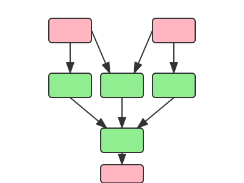

Analysing project at: ../tests/test_set_two
File Operations, Database Operations, and Import Analysis
================================================================================
File: alternative_equation.tex
Operation: READ/WRITE
Referenced in:
- ../tests/test_set_two/nb_example.ipynb
- ../tests/test_set_two/slides.qmd
File: data/input.csv
Operation: READ
Referenced in:
- ../tests/test_set_two/data_processing.py
- ../tests/test_set_two/nb_example.ipynb
File: data/processed.csv
Operation: READ/WRITE
Referenced in:
- ../tests/test_set_two/data_processing.py
- ../tests/test_set_two/visualisation.py
File: equation.tex
Operation: READ/WRITE
Referenced in:
- ../tests/test_set_two/model_solver.py
- ../tests/test_set_two/slides.qmd
File: output.png
Operation: READ/WRITE
Referenced in:
- ../tests/test_set_two/slides.qmd
- ../tests/test_set_two/visualisation.py
💽 Database Operations:
Database: mydatabase
Type: mssql
Operation: READ/WRITE
Referenced in:
- ../tests/test_set_two/data_processing.py
Module Imports:
Script: data_processing.py
- import numpy [external]
- import pandas [external]
- import pyodbc [external]
Script: model_solver.py
- from pathlib → pathlib:Path [external]
Script: nb_example.ipynb
- from pathlib → pathlib:Path [external]
- import pandas [external]
Script: visualisation.py
- import pyplot [external]
- import pandas [external]
- from data_processing → data_processing:process_data [internal]
Terminal Visualisation
📦 Project Dependencies
┗━━ 📰 slides.qmd
┣━━ 📄 equation.tex
┃ ┗━━ 📜 model_solver.py
┃ ┗━━ 📦 pathlib:Path
┣━━ 📄 alternative_equation.tex
┃ ┗━━ 📓 nb_example.ipynb
┃ ┣━━ 📄 data/input.csv
┃ ┣━━ 📦 pandas
┃ ┗━━ 📦 pathlib:Path
┗━━ 📄 output.png
┗━━ 📜 visualisation.py
┣━━ 📄 data/processed.csv
┃ ┗━━ 📜 data_processing.py
┃ ┣━━ 📄 data/input.csv
┃ ┣━━ 💽 mydatabase
┃ ┃ ┣━━ Type: mssql
┃ ┃ ┗━━ ↻ data_processing.py (circular)
┃ ┣━━ 📦 pyodbc
┃ ┣━━ 📦 pandas
┃ ┗━━ 📦 numpy
┣━━ 📦 pandas
┣━━ 📦 pyplot
┗━━ 🔧 data_processing:process_datasmartrappy
Smart reproducible analytical pipeline inspection.



Introduction
What does this package do?
smartrappy analyses a Python project and infers the directed acyclic graph (DAG) of the code and data dependencies, including the last time any data were refreshed and whether the data exist at all on disk. It is not perfect, and will miss a lot in complex projects: but for simple projects using, say, pd.read_csv(), it does a good job of inferring the steps. It can also infer writing to and from most databases. The inferred DAG is then visualised, and there are several options for doing that—the default being to produce a visualisation in the terminal.
What is smartrappy for?
smartrappy is designed to help you understand the dependencies in a project, especially in a context where there may be a lot of legacy code that resembles tangled spaghetti.
Quickstart
To use smartrappy as a command-line tool:
smartrappy /path/to/your/projectOr to use it within a Python script:
from smartrappy import analyse_project
from smartrappy.reporters import ConsoleReporter
model = analyse_project("/path/to/your/project")
reporter = ConsoleReporter()
reporter.generate_report(model)Installation
To install smartrappy, you can use pip install smartrappy or uv add smartrappy if you are using Astral’s uv. You can also use it as a standalone command-line tool with uv and the uvx command:
uvx smartrappy path/to/your/projectDocumentation
You can find the full documentation for smartrappy at https://aeturrell.github.io/smartrappy/.
Example of output
smartrappy .The graphviz and mermaid options are equally as aesthetically pleasing! Head to the docs to see those.
Options and configuration
Command-line
smartrappy [OPTIONS] path/to/your/projectArguments
path/to/your/project: Path to the Python project directory to analyse (required)
Options
-o, --output PATH: Output path for the analysis files (without extension)-f, --format [console|graphviz|mermaid|json]: Output format (default: console)--all-formats: Generate all output formats. Because why shouldn’t you have it all?-h, --help: Show help message--internal: Show only internal code dependencies. (default: false)--version: Show version information
Output formats
console: Output in terminal (default)graphviz: Generate Graphviz visualisation, saved as a PDFmermaid: Generate Mermaid diagram, which can be embedded in Markdownjson: Generate JSON representation, printed to the terminal if no output path is specified
By default, outputs are stored in the directory from where the smartrappy command is run.
Requirements
You can find a full list of requirements in the pyproject.toml file.
This package also requires that you have GraphViz installed.
License
Distributed under the terms of the MIT license, smartrappy is free and open source software.
Issues
If you encounter any problems, please file an issue along with a detailed description.